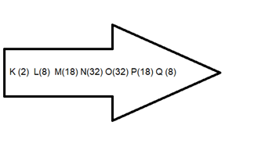
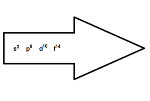
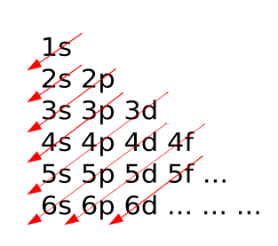
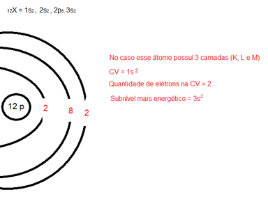
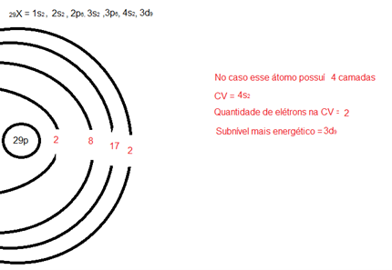

Distribuição eletrônica
O que é distribuição eletrônica?
A distribuição eletrônica, também conhecida como configuração eletrônica, é
uma representação dos elétrons de um átomo em seus diferentes níveis de energia e orbitais. Ela descreve como
os elétrons estão distribuídos nos subníveis de energia (s, p, d, f) e nas orbitas dentro desses subníveis.
Como realizar a distribuição eletrônica?
Um átomo possuí no máximo 7 camadas ou níveis de energia (K, L, M, N, O, P, Q, R),
sendo a camada mais externa chamada de camada de valência.

A representação acima mostra os níveis de energia de um átomo, sendo que os
números ao lado dessas letras são a quantidade de máxima de elétrons dentro dessas camadas.
A seguir temos uma tabela com as subcamadas de energia representadas por uma seta.

A questão é, para saber o “formato” de qualquer átomo da tabela periódica,
precisamos realizar a distribuição eletrônica, porém como fazemos isso?
O diagrama de Linus Pauling,
foi inventado pelo próprio, é a representação da distribuição eletrônica através dos subníveis de
energia, assim como ilustrado abaixo:

A seguir temos duas aplicações da distribuição eletrônica, utilizando o diagrama de Linus Pauling ilustrado acima:
